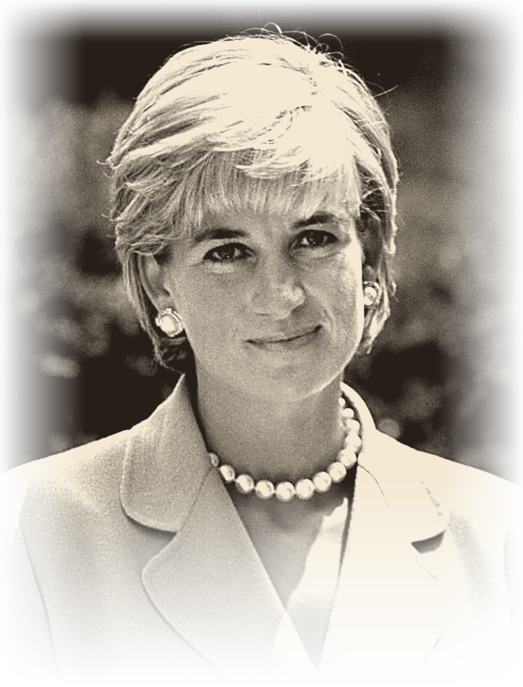

1Diana Frances Spencer was born on 1 July 1961 in England. She grew up in a large family with two older sisters and a younger brother. Her parents divorced when she was young.
2Diana was a quiet and shy child. She liked music, dancing and working with children. She studied in England and Switzerland but did not go to university. Before becoming a princess, she worked with children in London.
3In 1981, Diana married Prince Charles and became the Princess of Wales. They had two sons, William and Harry. Diana became very popular because she was kind, friendly and open with ordinary people.
4Diana did a lot of charity work. She visited hospitals and helped sick children, homeless people and people with HIV/AIDS. She also worked to stop the use of landmines. She used her fame to talk about important problems and help people in need.
5Diana died in a car accident in Paris on 31 August 1997. She was 36 years old. People still remember her for her kindness, courage and charity work. She was often called the “People’s Princess”. One of her famous quotes is: “Only do what your heart tells you.”